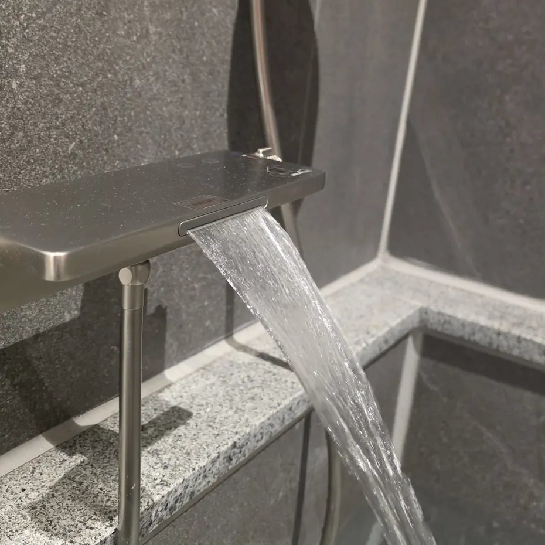
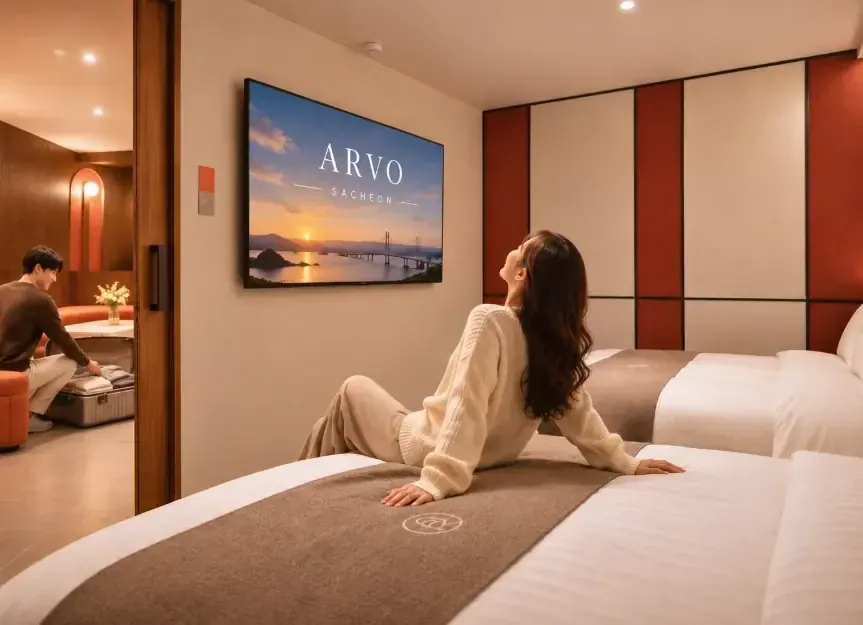
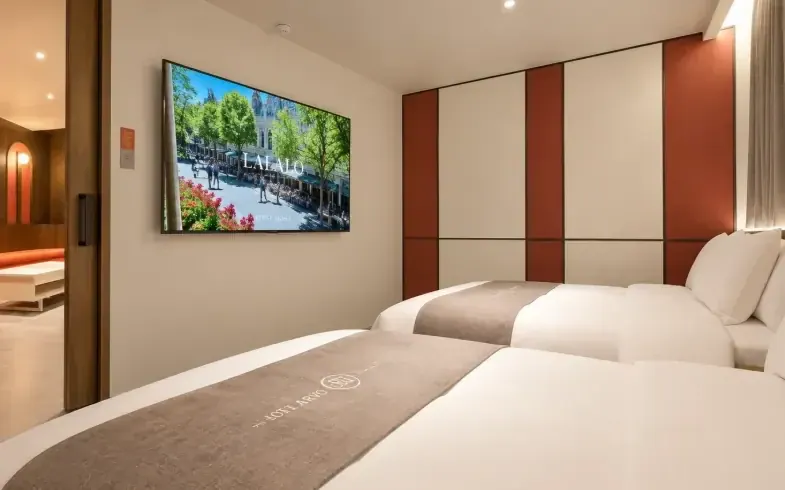
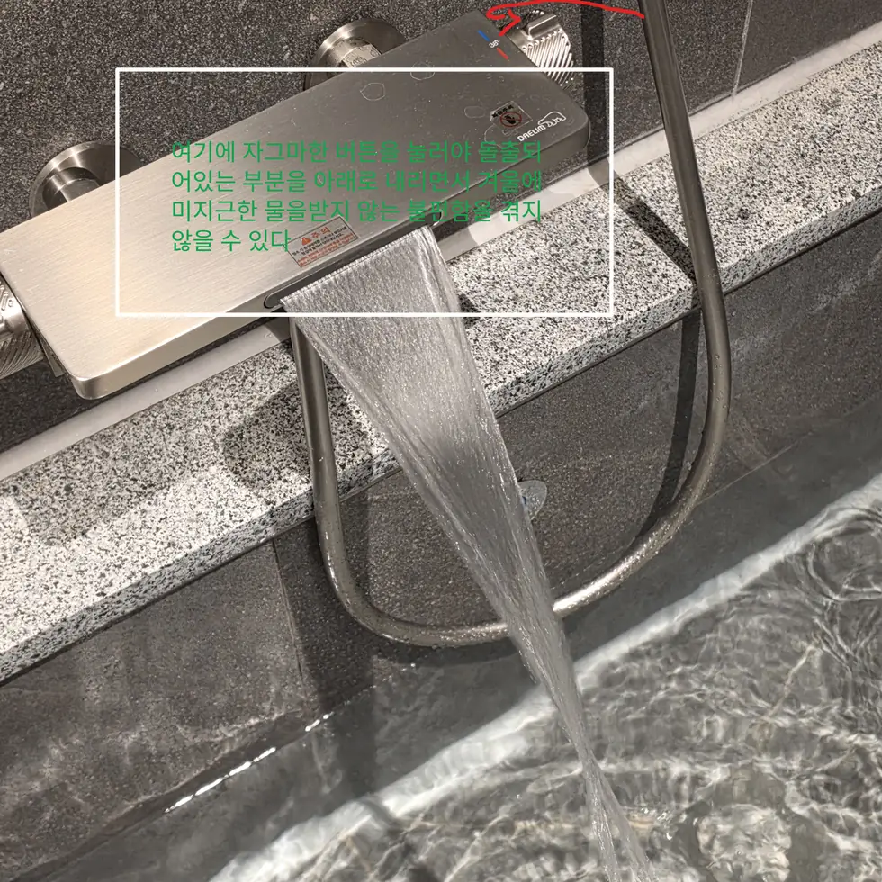
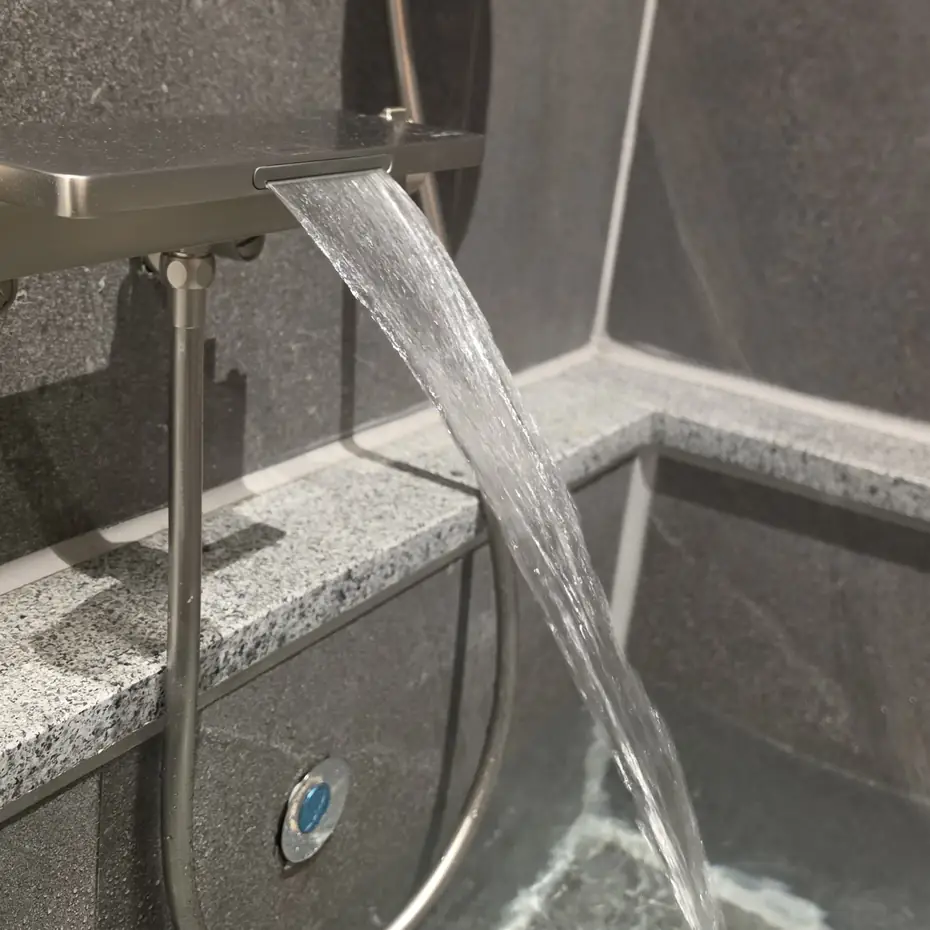
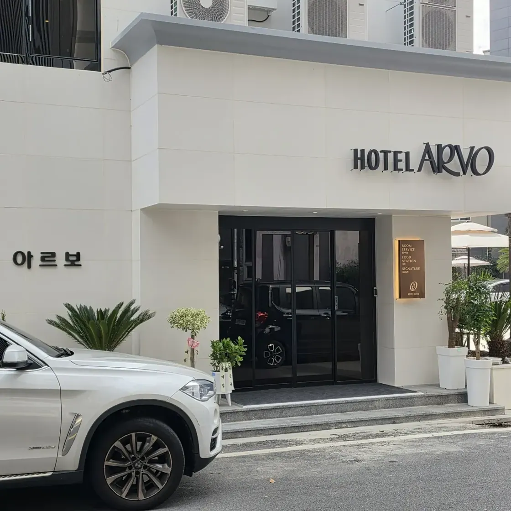
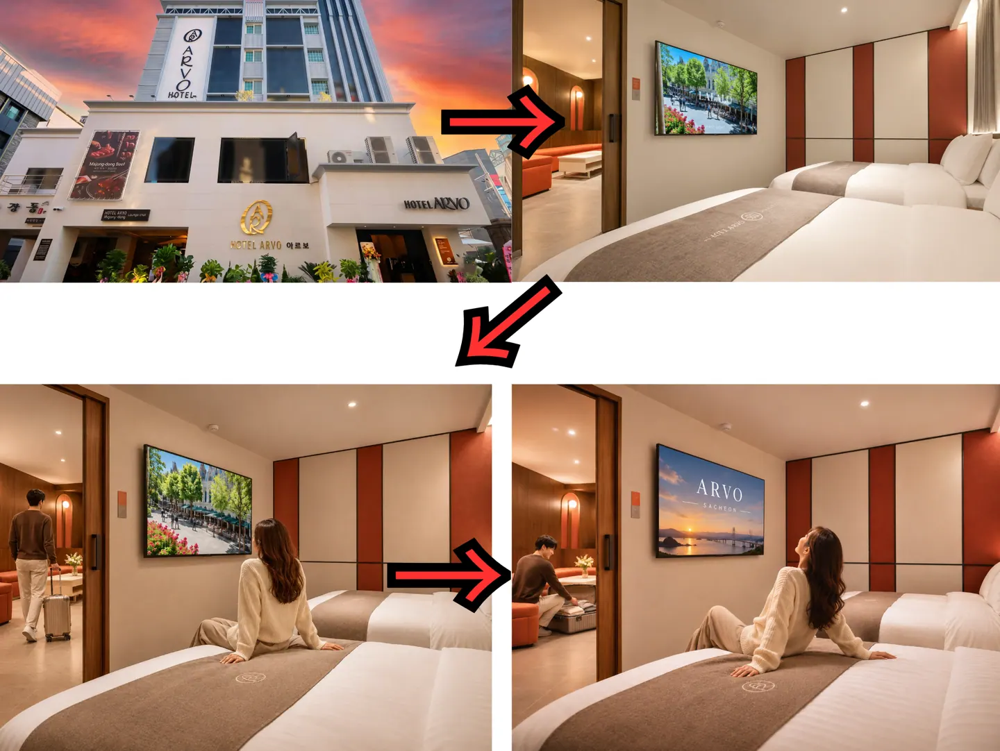
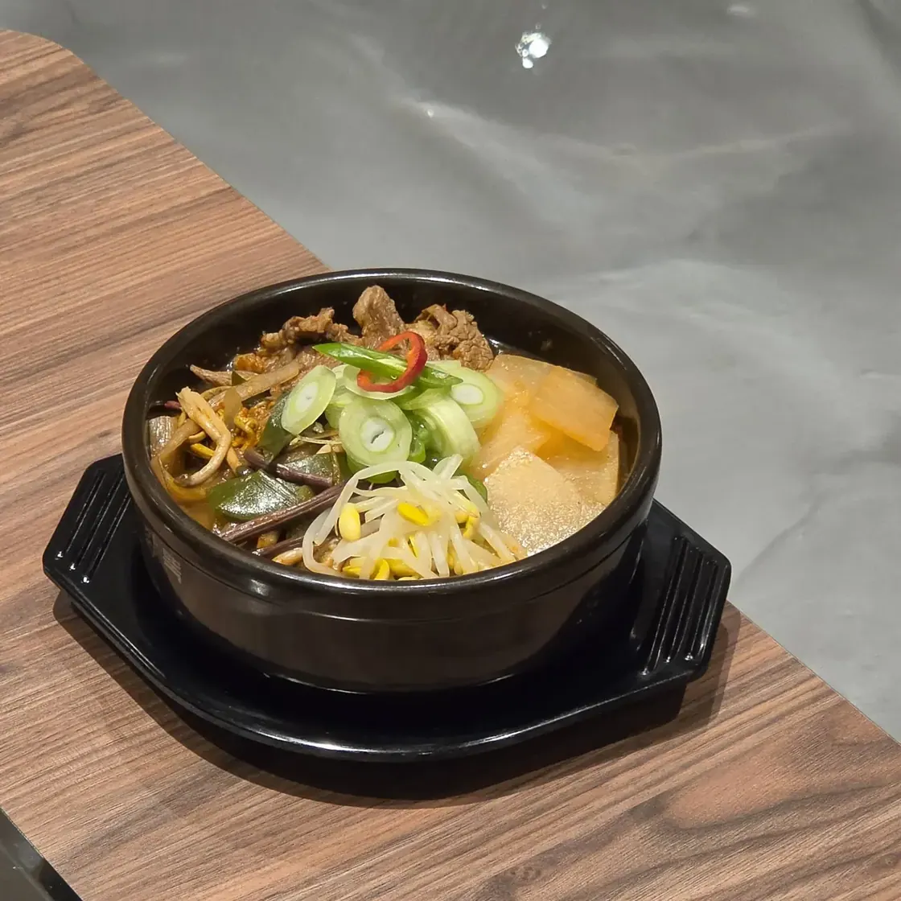
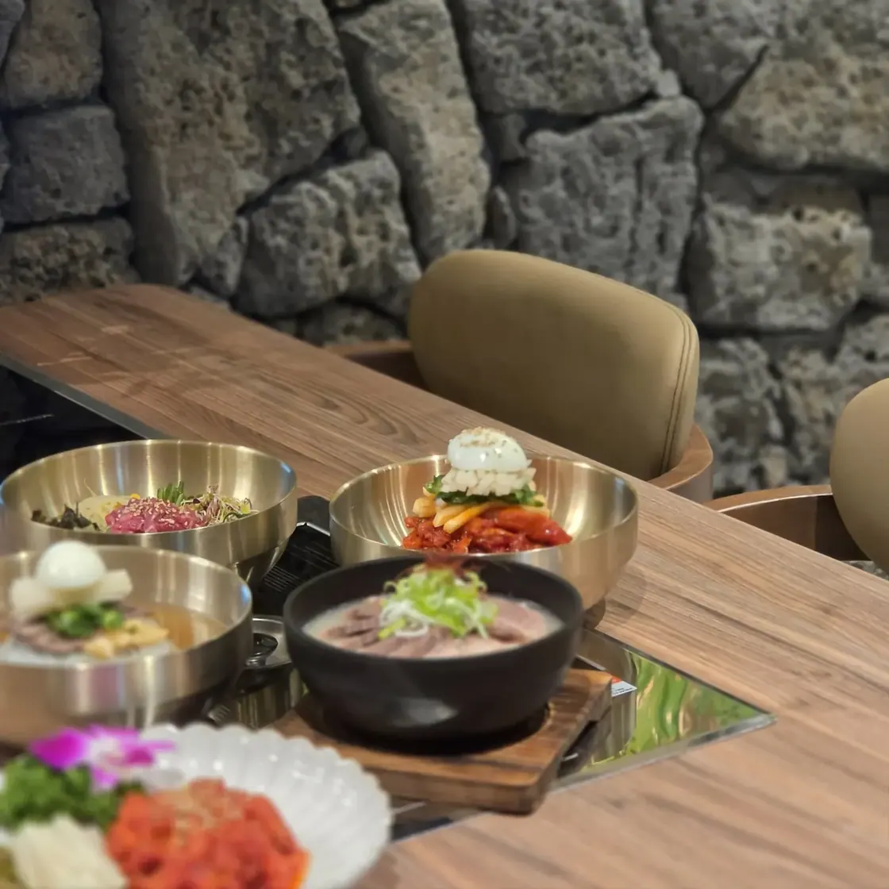
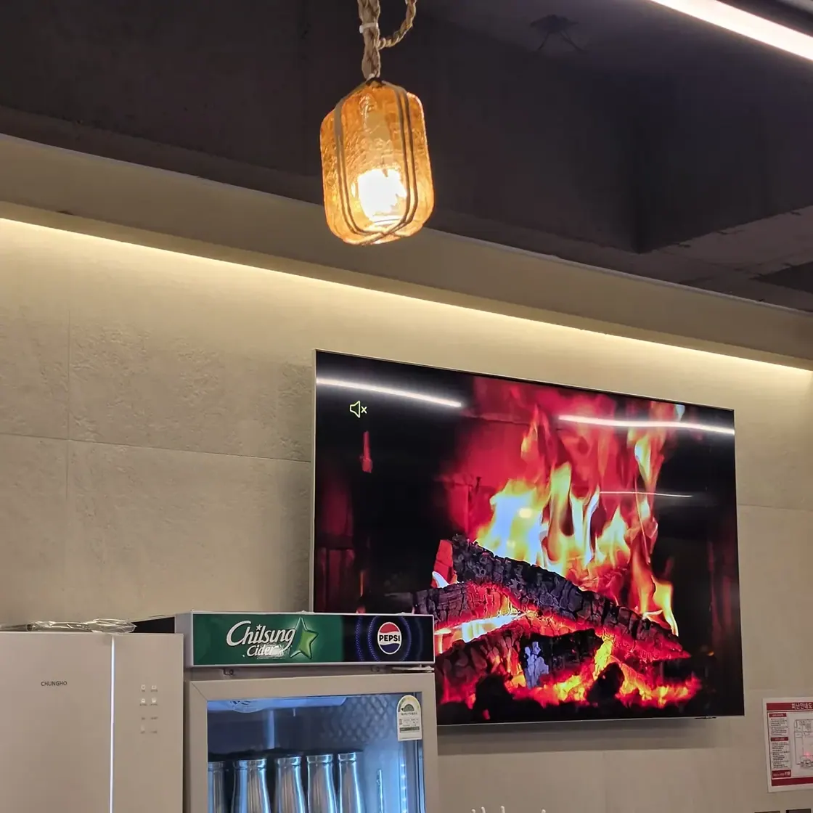

01 / CURRENT INTERIOR
안내가 없을 때
수전은 잘 보이지만, 작은 조작부가 어떤 역할인지 처음에는 알기 어렵습니다.
고객이 호텔을 찾고, 객실을 고르고, 편안히 머무는 순간까지.
지금까지 살핀 내용을 함께 보고, 다음에 바꿀 장면을 골라보려 합니다.

변화가 조금 더디게 느껴지셨을 수 있습니다. 그래서 준비한 시안과 실제 반영된 작업, 확인이 남은 부분을 나눠 보여드리려 합니다. 먼저 고칠 수 있는 작은 불편은 앞당기고, 사진과 검색이 손님의 선택에 미치는 변화는 실제 반응으로 확인하겠습니다.
숫자를 눌러 비교하고, 사진을 넘겨 보고, 다음에 필요한 작업을 골라볼 수 있습니다.
서로 다른 기간을 비교하지 않도록, 두 채널의 같은 4주를 나란히 놓았습니다.
9월 20일부터 11월 14일까지 8주간의 표시 합계입니다. 최근 30일 자료와는 기간이 달라 직접 비교하지 않습니다.
이번 화면에서 가장 높은 주간 예약 수치입니다.
예약의 움직임이 보입니다. 착수 전에도 예약이 많았던 주가 있습니다. 사진 게시일과 가격, 광고, 행사 영향을 함께 확인해 어떤 변화가 도움이 되었는지 살펴보겠습니다.
2026년 10월 18일~11월 14일 · 두 화면에서 같은 날짜 구간만 비교했습니다.
같은 4주 예약 표시 합계
같은 4주 예약 표시 합계
해당 자료에서는 45건 차이
동일 4주 174건과 최근 30일 183건은 서로 다른 기간입니다. 취소 16건도 별도로 표시돼 있어 실투숙·순매출과는 구분해야 합니다.
비교를 위한 잠정 집계입니다. 두 화면의 플랫폼 명칭, 예약 접수·취소 포함 기준, 실제 반영일과 가격·광고 변경을 확인한 뒤 공식 비교로 확정합니다. 현재 화면의 수치로는 ‘여기어때가 2배’라고 표현하지 않습니다.
손님은 가게 이름만으로 검색하지 않습니다. 지역과 메뉴, 방문 목적에 맞춰 정보를 정리하고 필요한 채널에 차근히 반영하겠습니다.
상호를 바꾸면 순위가 오른다고 약속할 수는 없습니다. 실제 상호와 운영정보를 확인하고, 승인된 내용만 게시하겠습니다.
정확한 상호·주소·업종·지도 핀부터 확인합니다.
상호·업종·대표키워드와 실제 메뉴·시설 대조
대표님·현장 담당자의 운영 사실 승인
프로필·사진·설명·콘텐츠를 채널별 반영
검색·문의·예약·실제 방문을 구분해 확인
네이버 공식 안내에 따르면 대표키워드는 업체와 관련된 메뉴·서비스를 최대 5개까지 입력할 수 있으며, 검색 순서는 관련성·정보 품질 등 복수 요소로 결정됩니다. 상호 변경도 실제 사업장 명칭 확인이 먼저입니다. 공식 안내 보기 ↗
예약하기 전의 기대와 객실에 들어온 뒤의 경험을 버튼으로 바꿔 보세요.
침대의 크기, 공간의 따뜻함, 잠시 머무는 모습. 사진은 아직 만나지 않은 객실을 상상하게 합니다.
아무 안내가 없을 때, 불편을 발견해 적어둔 순간, 그리고 읽기 쉬운 안내 시안. 세 장면을 나란히 비교해 보세요.

욕조를 쓰다가 잠시 망설였던 곳에, 짧고 읽기 쉬운 안내를 더해보려 합니다.

수전은 잘 보이지만, 작은 조작부가 어떤 역할인지 처음에는 알기 어렵습니다.

현장에서 사용법을 알아보고 적어둔 소중한 메모입니다. 다만 글씨가 배경에 묻혀 잘 읽히지 않습니다.

버튼 위치는 사진으로 짚고, 조작 방법은 짧게 적었습니다. 어두운 배경을 깔아 글자도 또렷하게 보입니다.
한 달 동안 외관, 객실 구조, 머무는 장면을 차례로 살폈습니다. 연출 이미지는 실제 게시 사진과 구분해 보여드립니다.

이름과 건물, 도착 위치를 확인합니다.
침대 구성과 동선을 사진이 정확히 설명하는지 봅니다.
공간에서 보내는 시간을 상상합니다. 인물은 연출 시안입니다.
같은 객실의 다른 첫인상을 비교해 보세요. 먼저 공간의 구조가 보여야 하는지, 실제 머무는 장면을 통해 호기심을 열어야 하는지 객실별로 다를 수 있습니다.
A · 침대 구성과 실제 동선을 먼저 이해합니다.

화살표가 포함된 원본 구상 자료입니다. 인물 연출 이미지는 실제 투숙객 사진이 아니며 게시 완료 상태를 뜻하지 않습니다.
촬영한 네 가지 뚝배기 사진입니다. 비슷한 각도로 정돈했지만, 작은 화면에서도 음식마다 재료와 국물의 차이가 잘 보이도록 더 살펴보겠습니다.

PHOTO 01 / 같은 그릇, 다른 내용재료의 표정과 국물의 색을 먼저 봅니다. 이름을 확인한 후 음식별 주인공을 다르게 보여주는 컷으로 발전시킬 수 있습니다.

메뉴를 보여준 다음, 실제 식사 자리에서 느끼는 분위기를 전합니다.

TV의 가림과 반사를 고려해 음식 영상·안내 문구의 위치를 다시 잡습니다.
대표님께서 갈비살과 꽃살의 수익성이 좋다고 말씀해 주셨습니다. 그 이야기를 기억하며, 두 메뉴가 손님 눈에도 잘 들어오게 하는 방법을 살펴봤습니다.
대표님께서는 코다리 쪽에 마음이 가신다고 말씀해 주셨습니다. 제공 원가와 조리 편의뿐 아니라 손님에게 남을 인상까지 보고 결정하면 좋겠습니다.
객실과 식당에서 느낀 점을 편하게 남길 수 있는 카드를 구상했습니다. 좋았던 점뿐 아니라 아쉬운 점도 듣겠습니다.
좋았던 순간도, 조금 아쉬웠던 순간도
다음 손님을 위한 이야기로 남겨주세요.
맛있었던 한 점과 기억에 남은 이야기를
편하실 때 들려주세요.
고객용 QR은 현재 예시이며 작동하는 링크가 아닙니다. 후기 작성 대가로 증정품·메뉴를 제공하거나 긍정적인 후기만 선별하는 방식은 사용하지 않습니다. 실제 카드 제작·설치는 승인된 범위에서 진행합니다.
화면에서 보여드리는 시안과 실제 게시·설치 여부를 구분했습니다. 먼저 손님에게 바로 도움이 되는 부분부터 살펴보겠습니다.
객실별 사진 구도·인물 연출 방향, 욕조 안전 버튼과 하이오더 안내 필요, 마장동 메뉴 사진과 카운터 화면의 가림.
자료 및 현장 사진으로 확인온수·화면·Wi-Fi 안내물, 객실별 사진 배열, 음식 포스터·카운터 영상의 문장과 구성.
운영 확인과 시안 승인 필요실제 설치와 OTA·지도 반영 여부, 문의 감소, 객실별 예약 반응, 메뉴·식사 선택의 변화.
실행·게시·측정 결과는 아직 확정하지 않음기기 작동법, 메뉴와 제공 조건, 현재 채널 표기를 확인합니다.
실제 붙일 문장과 이미지 순서를 화면으로 보여드립니다.
인쇄·설치·채널 게시를 작업별로 나누어 완료 여부를 확인합니다.
사진 변경일과 문의·예약·식당 방문을 구분해 관찰합니다.
온수 조작 · 하이오더 화면 · Wi-Fi · 카드키 홀더 디자인의 연결
NOL·여기어때 객실 사진, ‘사천 마장동’ 검색, 네이버·지도·티맵·카카오맵 표시 상태 확인
‘사천의 아침’ 조식 상품, 메뉴와 코다리 제공 검토, 자발적 후기 QR, 카운터 TV 화면. 제공 조건은 운영 확정 후 적용
가족분들과 함께 보시며 필요한 부분을 골라주세요. 선택한 내용은 자동으로 보내지지 않고, 다음 만남의 참고로만 사용됩니다.
아직 선택하지 않으셔도 됩니다. 선택은 발주·증정 시행·리뷰 요청의 동의가 아니며, 현장 제공 조건은 별도로 결정합니다.
객실 유형별로 먼저 보여야 할 실사 전경을 정하고, 연출 이미지는 실제 이용과 어긋나지 않는 곳에 배치합니다.
고르신 내용을 다음 만남에서 함께 살펴보겠습니다.
이곳에서 별도의 신청이나 결제가 진행되지는 않습니다. 다음 미팅에서 필요한 일의 우선순위를 맞추는 용도입니다.
현재 계약의 제작 수량·수정 범위부터 확인합니다. 새로운 인쇄·설치·추가 촬영·반복 운영은 필요성과 결과물을 확인한 뒤 별도로 정할 수 있습니다.
계약 문안에 포함된 사진·촬영, 리뷰 안내 시안, 식당 영상, 홈페이지·채널 점검을 먼저 배정하고 진행 현황을 공유하겠습니다. 같은 산출물을 중복 청구하지 않습니다.
기본 수량을 넘어서는 촬영·인쇄·부착, 유료 광고, 새로운 랜딩·QR 운영 및 정기 개선은 필요가 확인될 때 별도 범위를 제안하겠습니다. 기존 운영과 신규 제작은 구분합니다.
포함된 수량과 결과물을 함께 대조
필요한 안내물·촬영·설치만 협의
검색·사진·현장 반응을 정기 검수
지금까지 계약한 범위와 실제 납품 수량을 먼저 대조합니다. 추가 촬영·인쇄·설치·별도 운영은 필요성과 제작물을 보여드린 뒤 협의하며, 이 화면에서 결제·발주는 진행되지 않습니다.
사진의 첫인상이 고객의 선택에 영향을 줄 수 있다는 것은 검증할 가설입니다. 객실·시점·가격·광고·예약 조건을 함께 기록하고, 클릭과 실제 예약을 구분하겠습니다.
상호 변경 자체를 순위 상승 방법으로 약속하지 않습니다. 실제 영업명, 플랫폼 업체 식별, 지도·업종·정보 정합을 먼저 확인하고 해당 검색어의 실제 표시를 관찰합니다.
기존에 제작하신 카드키 홀더 이미지를 공유해 주시면, 객실 이용안내의 톤과 규격을 맞추는 참고로 사용하겠습니다. 기존 디자인을 임의로 교체하지 않습니다.
대표님과 아버님·어머님께서 중요하게 생각하시는 장면을 먼저 고르면, 다음 만남에서는 그 부분의 실제 시안과 적용 순서를 보여드리겠습니다.
지난번 말씀해주신 객실 카드키 홀더 이미지도 편하실 때 공유 부탁드립니다. 기존 디자인을 확인한 뒤 안내물과 자연스럽게 연결해 보겠습니다.